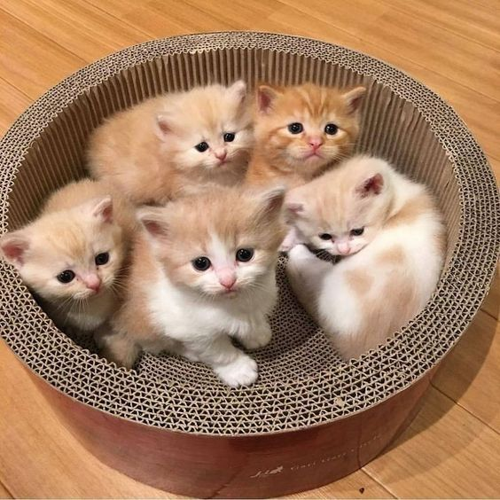

Amazing article
karthigaOwning a cat is a great experience as they are excellent companions. However, although cats are often independent and seem quite self-sufficient, it is important to remember that they do require lots of care and affection from their people. Before you adopt a cat please ensure that you have thought carefully about the responsibility of cat ownership. Please visit the RSPCA to see all of the cats and kittens that we have available for adoption. All adult cats receive a behaviour assessment, and our staff will be able to offer advice on the particular cat that you have chosen. It is important to note any recommendations that staff make in regard to a particular cats' suitability to different home environments, such as those with small children and/or other resident cats. Our cats have been colour coded using our “Find Your Feline Friend” system to give you an indication of the family type that will suit them best. Above all else, our interest is in the welfare of the cat and making sure that they find a 'forever home'.
My Cat
Each shelter will require an adoption application form to be filled out, and an additional 24-hour cooling off period may be required to give you the opportunity to ensure you have made the right decision. After this cooling off period, an interview can be arranged with an adoption officer to ensure that the best possible match has been made.